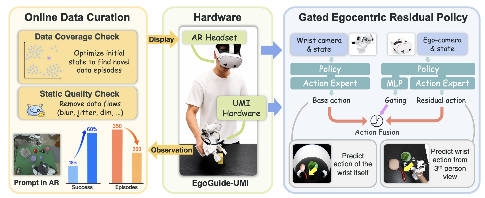
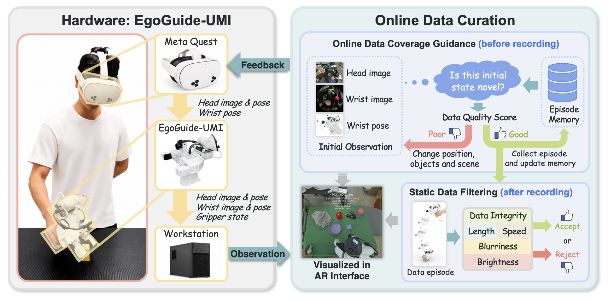
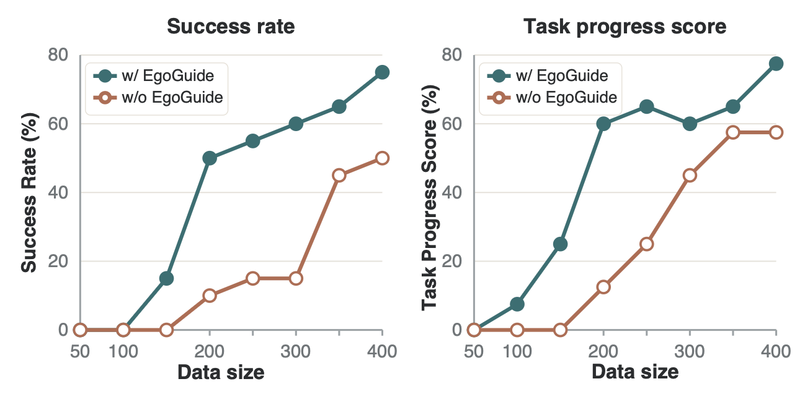

EgoGuide-UMI synchronizes a wrist camera, wrist pose, gripper state, head/egocentric image, and head pose. The workstation estimates data coverage online and sends simple feedback back to the AR interface before recording.

Robot learning from real-world demonstrations is currently constrained by data scaling. Universal Manipulation Interface (UMI) provides an efficient robot-free data collection interface, yet current UMI-style pipelines often collect redundant demonstrations and lack global scene context. To improve data efficiency, we present EgoGuide, a collection interface that records synchronized wrist and head/egocentric observations and couples them with online visual-geometric data quality guidance. We also introduce a Gated Egocentric Residual Policy for robust learning from a viewpoint-varying egocentric camera, allowing head/egocentric context to correct ambiguous local observations while preserving stable wrist-view control. Real-world experiments show that EgoGuide reduces the required number of data episodes and improves data efficiency. The residual policy further improves robustness under visual occlusion.
EgoGuide tells the collector, inside AR, whether the current wrist view, ego view, and wrist pose are already covered by the dataset. In plain terms: it nudges people away from recording another near-duplicate demo and toward useful new states.
GERP keeps the wrist camera as the stable default policy, then lets the egocentric camera make a gated correction when the local wrist view is ambiguous, occluded, or missing broader task context.
EgoGuide raises success on pepper sorting (200 demos).
Pepper Sorting reaches comparable success using only half as many demonstrations.
GERP improves Pepper Sorting success and task progress over wrist-only policies under harder perception.

EgoGuide-UMI synchronizes a wrist camera, wrist pose, gripper state, head/egocentric image, and head pose. The workstation estimates data coverage online and sends simple feedback back to the AR interface before recording.

Across standard UMI-style tasks and challenging occlusion cases, EgoGuide-guided data scales better than unguided collection, while the gated residual policy uses egocentric context without replacing the stable wrist-view controller.
The demonstrations are collected and evaluated in different scenes across more than 100 km away, to show the policy generalization and robustness.